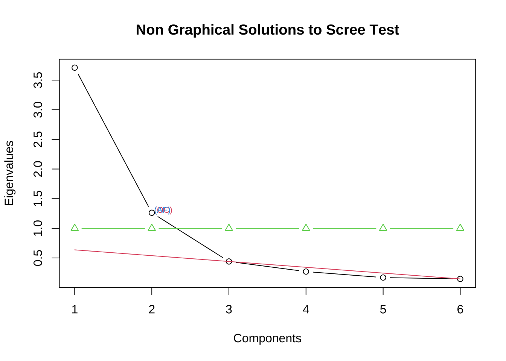
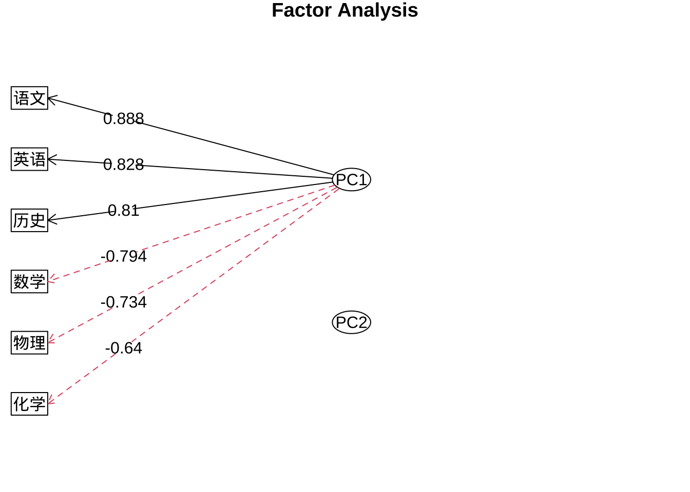
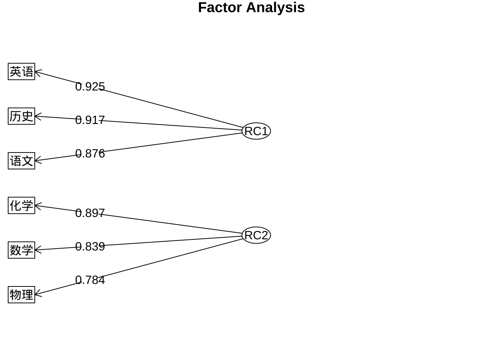
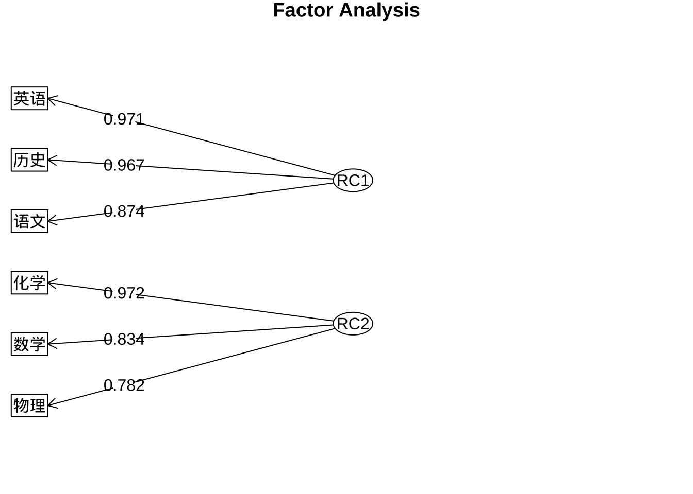
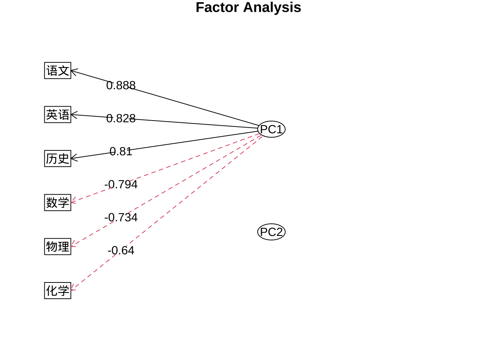
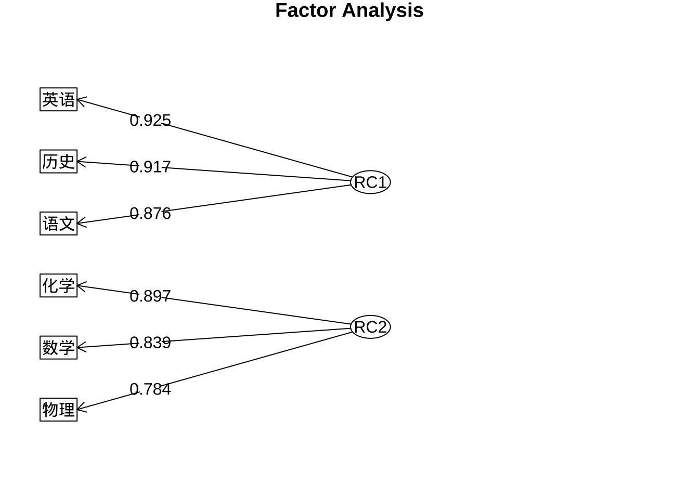
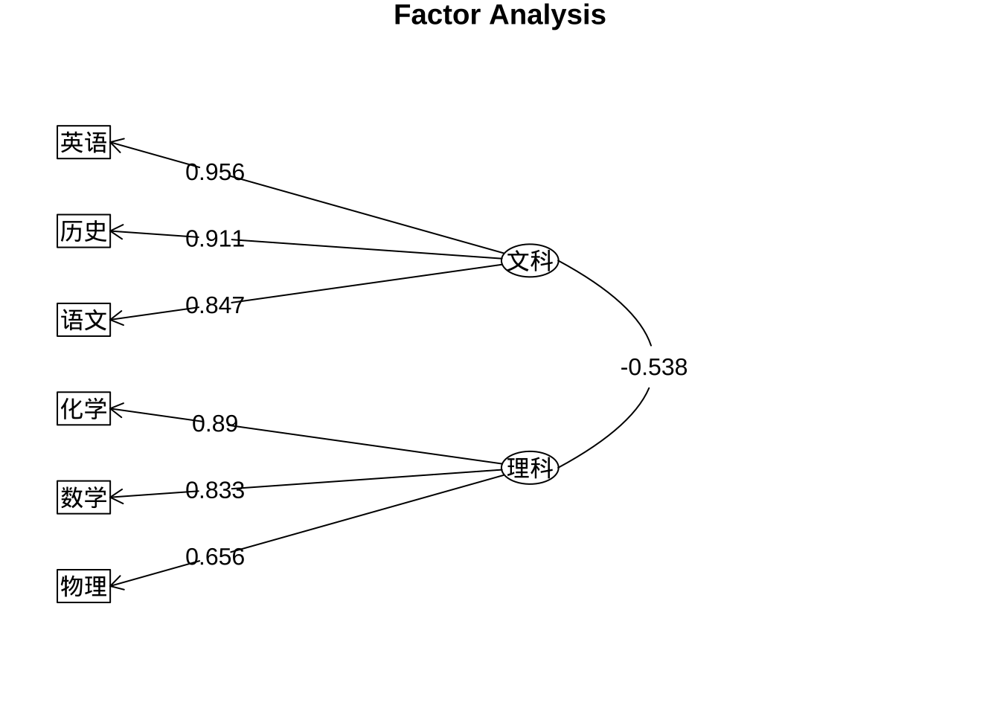
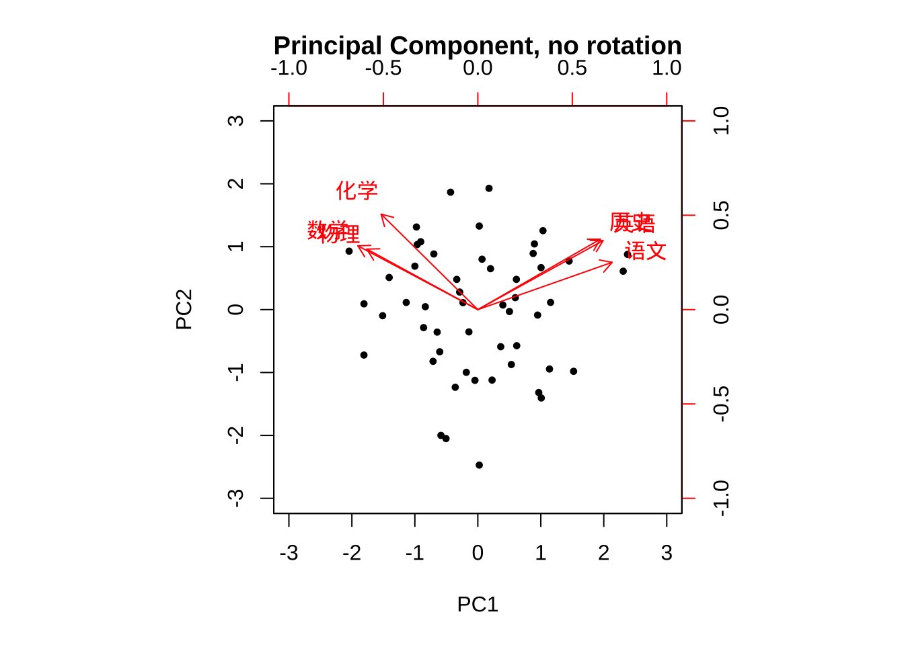
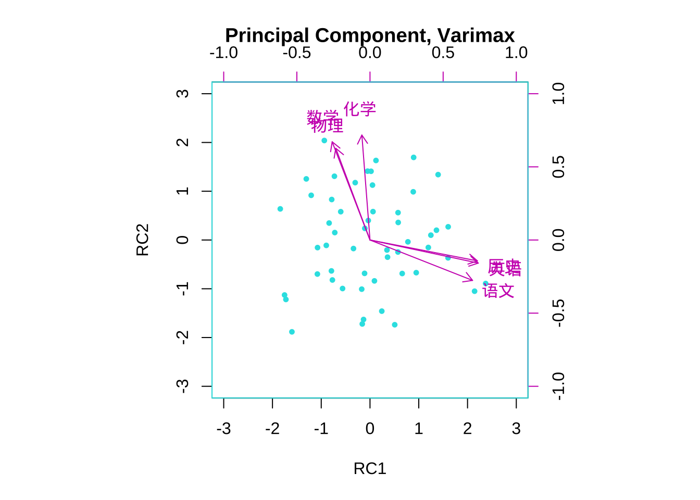
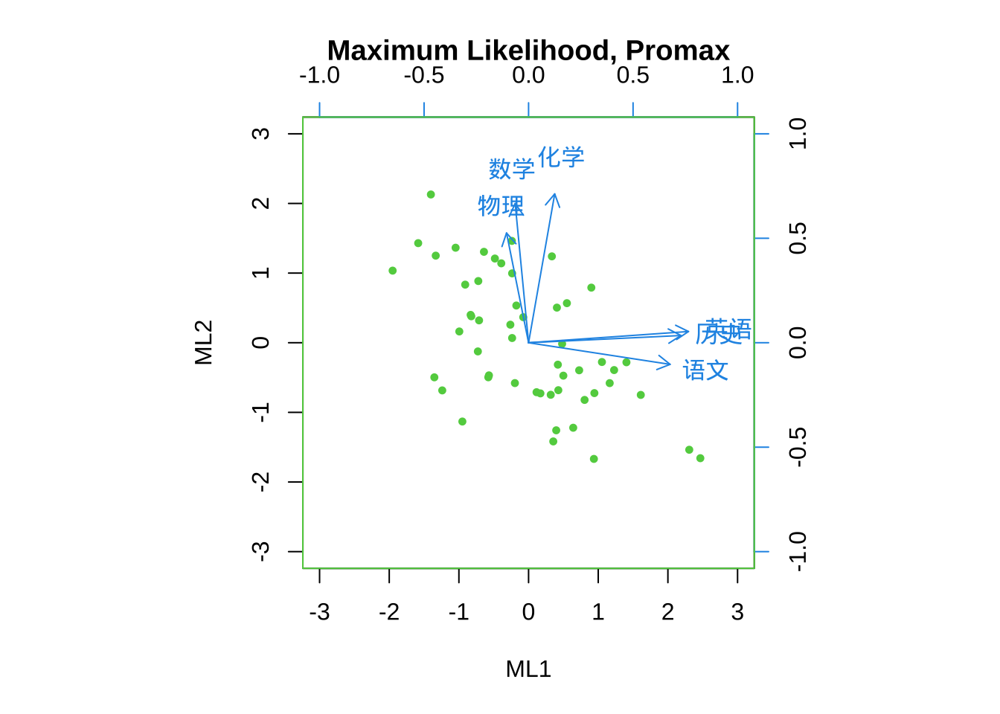

# 读取数据
#P146，例题7.1 52名学生的6科目成绩
library(readr)
library(tidyverse)
eg7_1 <- read_csv("eg6.1.csv")
eg7_1 <- eg7_1 %>% rename(数学 = x1,
物理 = x2,
化学 = x3,
语文 = x4,
历史 = x5,
英语 = x6)7 FA在R中的实现
本章介绍R中的因子分析。
第1步：评估数据是否适合做因子分析
#计算KMO值，大于0.8适合，小于0.5不适合，适合降维。
library(psych)
KMO(eg7_1)Kaiser-Meyer-Olkin factor adequacy
Call: KMO(r = eg7_1)
Overall MSA = 0.8
MSA for each item =
数学 物理 化学 语文 历史 英语
0.80 0.83 0.76 0.84 0.81 0.78 #BARTLETT检验，p值小于0.05，拒绝“原始变量的相关系数矩阵是单位阵（相互独立）”的原假设，适合降维。
library(EFAtools)
BARTLETT(eg7_1)
✔ The Bartlett's test of sphericity was significant at an alpha level of .05.
These data are probably suitable for factor analysis.
𝜒²(15) = 205.97, p < .001第2步：确定提取的因子个数
#计算特征值和特征向量
eg7_1.ev <- eg7_1 %>% cor() %>%
eigen()
eg7_1.eveigen() decomposition
$values
[1] 3.7099044 1.2624812 0.4408365 0.2705018 0.1695159 0.1467602
$vectors
[,1] [,2] [,3] [,4] [,5] [,6]
[1,] -0.4120520 -0.3759773 0.21582978 0.78801362 -0.0205822 -0.14450829
[2,] -0.3811779 -0.3567060 -0.80555264 -0.11755209 0.2120360 0.14061074
[3,] -0.3321347 -0.5626165 0.46743533 -0.58763655 -0.0333622 -0.09068468
[4,] 0.4611846 -0.2785231 -0.04426879 0.02783261 0.5990449 -0.59003773
[5,] 0.4205876 -0.4147836 -0.25039004 0.03376008 -0.7384344 -0.20479353
[6,] 0.4301372 -0.4065022 0.14612244 0.13410793 0.2221800 0.74902427#绘制碎石图
#install.packages("nFactors")
library(nFactors)
eg7_1.ev$values %>% nScree() %>%
plotnScree(legend = F)
第3步：估计因子载荷
主成分法 principal component method
无旋转
library(psych)
#未旋转
fa.pc.none <- principal(eg7_1, nfactors = 2,
rotate = "none")
fa.pc.nonePrincipal Components Analysis
Call: principal(r = eg7_1, nfactors = 2, rotate = "none")
Standardized loadings (pattern matrix) based upon correlation matrix
PC1 PC2 h2 u2 com
数学 -0.79 0.42 0.81 0.19 1.5
物理 -0.73 0.40 0.70 0.30 1.5
化学 -0.64 0.63 0.81 0.19 2.0
语文 0.89 0.31 0.89 0.11 1.2
历史 0.81 0.47 0.87 0.13 1.6
英语 0.83 0.46 0.90 0.10 1.6
PC1 PC2
SS loadings 3.71 1.26
Proportion Var 0.62 0.21
Cumulative Var 0.62 0.83
Proportion Explained 0.75 0.25
Cumulative Proportion 0.75 1.00
Mean item complexity = 1.6
Test of the hypothesis that 2 components are sufficient.
The root mean square of the residuals (RMSR) is 0.06
with the empirical chi square 5.96 with prob < 0.2
Fit based upon off diagonal values = 0.99# com的含义
# com : Hoffman's index of complexity for each item，
#该值越接近于1，代表该原始变量主要由某个因子代表。 输出结果解读
因子载荷矩阵（loadings）
- PC1、PC2：第 1、第 2个公共因子在各变量上的标准化载荷（loading）。载荷实际上是变量在该成分方向上的相关系数（或投影系数），绝对值越大表示该成分对该变量解释力越强。注意载荷的正负只是方向的约定（可以同时乘以 −1），不影响结构本质。
h2（communalities，共同度）
- 每个变量被这两个公共因子共同解释的方差比例。比如 数学 的 h2 = 0.81，表示两个公共因子可以解释数学 81% 的方差；剩下 19%（u2）是变量的独特方差或噪声。
u2（uniqueness，特有方差）：等于 1 − h2，表示未被提取成分解释的方差比例。
com（complexity）: 衡量某个变量在提取的因子/成分上“分布多少”的指标，越接近 1 表示该变量主要加载在单一因子上（结构简单），越接近因子数 m 表示该变量在所有因子上分布得较均匀（结构复杂）。
SS loadings 就是每个因子的“载荷的平方和”，计算方法是把该因子在所有变量上的载荷取。
Proportion Var 是某个因子解释的“总体方差”的比例。
SS loadings 为 3.71 和 1.26，p = 6（因为用相关矩阵）。
Proportion Var_1 = 3.71 / 6 ≈ 0.6183 → 0.62（输出）
Proportion Var_2 = 1.26 / 6 = 0.21 → 0.21
Cumulative Var after 2 = (3.71+1.26)/6 = 0.83
“Proportion Explained 0.75 0.25” 表示在“提取出的两个公共因子”这部分方差中，PC1 占 75%，PC2 占 25%。
“Cumulative Proportion 0.75 1.00” 表示按顺序累加：前 1 个因子累计占 75%，前 2 个因子（即两个因子一起）占 100%（因为你只看这两个被提取的因子，所以它们合起来占提取方差的全部）。
Mean item complexity = 1.6
- 所有变量复杂度（complexity）的平均值，衡量每个变量在提取的成分上“分布得多均匀”。Mean item complexity1.6（m=2时）表示大多数变量较接近简单结构，但也有一些变量在两个成分上都有明显载荷。
“Test of the hypothesis that 2 components are sufficient.”检验：两个成分是否足够，用于评估用两个成分重构相关矩阵是否与观测相关矩阵差异显著。
RMSR = 0.06（残差的均方根）
RMSR 观测相关矩阵与模型重构相关矩阵（通常只看非对角元素，即变量间相关）的残差的均方根：
经验判断：RMSR ≈ 0.05 或更低通常认为拟合很好；0.05–0.08 可接受；>0.10 则拟合较差。但这些阈值不是绝对规则，应结合样本量与其他拟合指标一起看。
empirical chi square = 5.96 with prob < 0.2（经验卡方统计与 p 值）
- 含义：基于残差构造的卡方检验，其原假设 H0：所提取的 2 个成分能在总体上重构观测的相关结构（即模型拟合良好）。检验统计量约为 5.96，对应的 p 值约为 0.2（输出写成 “prob < 0.2”）。结论：p ≈ 0.2（大于常用显著性水平 0.05），因此不能拒绝 H0——没有足够证据表明 2个成分不足以解释相关结构，换句话说模型可以接受。
#绘制因子载荷系数图
fa.diagram(fa.pc.none$loadings, digits = 3)
PC2上的载荷的绝对值都小于PC1，所以不绘制指向观测变量的箭头。
varimax正交旋转
#varimax正交旋转
fa.pc.varimax <- principal(eg7_1, nfactors = 2,
rotate = "varimax")
fa.pc.varimaxPrincipal Components Analysis
Call: principal(r = eg7_1, nfactors = 2, rotate = "varimax")
Standardized loadings (pattern matrix) based upon correlation matrix
RC1 RC2 h2 u2 com
数学 -0.32 0.84 0.81 0.19 1.3
物理 -0.29 0.78 0.70 0.30 1.3
化学 -0.07 0.90 0.81 0.19 1.0
语文 0.88 -0.35 0.89 0.11 1.3
历史 0.92 -0.18 0.87 0.13 1.1
英语 0.93 -0.20 0.90 0.10 1.1
RC1 RC2
SS loadings 2.66 2.31
Proportion Var 0.44 0.39
Cumulative Var 0.44 0.83
Proportion Explained 0.54 0.46
Cumulative Proportion 0.54 1.00
Mean item complexity = 1.2
Test of the hypothesis that 2 components are sufficient.
The root mean square of the residuals (RMSR) is 0.06
with the empirical chi square 5.96 with prob < 0.2
Fit based upon off diagonal values = 0.99#按因子载荷系数降序排列
print(fa.pc.varimax$loadings, digits = 3, cutoff = 0.5,sort = T)
Loadings:
RC1 RC2
语文 0.876
历史 0.917
英语 0.925
数学 0.839
物理 0.784
化学 0.897
RC1 RC2
SS loadings 2.661 2.312
Proportion Var 0.443 0.385
Cumulative Var 0.443 0.829#绘制因子载荷系数图
fa.diagram(fa.pc.varimax$loadings, digits = 3)
promax正交旋转
#promax斜交旋转
fa.pc.promax <- principal(eg7_1, nfactors = 2,
rotate = "promax")
fa.pc.promaxPrincipal Components Analysis
Call: principal(r = eg7_1, nfactors = 2, rotate = "promax")
Standardized loadings (pattern matrix) based upon correlation matrix
RC1 RC2 h2 u2 com
数学 -0.12 0.83 0.81 0.19 1.0
物理 -0.10 0.78 0.70 0.30 1.0
化学 0.18 0.97 0.81 0.19 1.1
语文 0.87 -0.13 0.89 0.11 1.0
历史 0.97 0.07 0.87 0.13 1.0
英语 0.97 0.05 0.90 0.10 1.0
RC1 RC2
SS loadings 2.70 2.27
Proportion Var 0.45 0.38
Cumulative Var 0.45 0.83
Proportion Explained 0.54 0.46
Cumulative Proportion 0.54 1.00
With component correlations of
RC1 RC2
RC1 1.00 -0.49
RC2 -0.49 1.00
Mean item complexity = 1
Test of the hypothesis that 2 components are sufficient.
The root mean square of the residuals (RMSR) is 0.06
with the empirical chi square 5.96 with prob < 0.2
Fit based upon off diagonal values = 0.99#按因子载荷系数降序排列
print(fa.pc.promax$loadings, digits = 3, cutoff = 0.5,sort = T)
Loadings:
RC1 RC2
语文 0.874
历史 0.967
英语 0.971
数学 0.834
物理 0.782
化学 0.972
RC1 RC2
SS loadings 2.699 2.274
Proportion Var 0.450 0.379
Cumulative Var 0.450 0.829fa.diagram(fa.pc.promax$loadings, digits = 3)
极大似然法 Maximum Likelihood
#方法一：psych::fa
fa.ml.none1 <- fa(eg7_1,
nfactors = 2,
fm = "ml",
rotate = "none")
fa.ml.none1Factor Analysis using method = ml
Call: fa(r = eg7_1, nfactors = 2, rotate = "none", fm = "ml")
Standardized loadings (pattern matrix) based upon correlation matrix
ML1 ML2 h2 u2 com
数学 -0.68 0.56 0.77 0.23 1.9
物理 -0.60 0.43 0.54 0.46 1.8
化学 -0.49 0.66 0.67 0.33 1.8
语文 0.92 0.10 0.85 0.15 1.0
历史 0.86 0.24 0.79 0.21 1.2
英语 0.88 0.27 0.85 0.15 1.2
ML1 ML2
SS loadings 3.40 1.07
Proportion Var 0.57 0.18
Cumulative Var 0.57 0.75
Proportion Explained 0.76 0.24
Cumulative Proportion 0.76 1.00
Mean item complexity = 1.5
Test of the hypothesis that 2 factors are sufficient.
df null model = 15 with the objective function = 4.28 with Chi Square = 205.97
df of the model are 4 and the objective function was 0.08
The root mean square of the residuals (RMSR) is 0.02
The df corrected root mean square of the residuals is 0.04
The harmonic n.obs is 52 with the empirical chi square 0.62 with prob < 0.96
The total n.obs was 52 with Likelihood Chi Square = 3.64 with prob < 0.46
Tucker Lewis Index of factoring reliability = 1.007
RMSEA index = 0 and the 90 % confidence intervals are 0 0.203
BIC = -12.17
Fit based upon off diagonal values = 1
Measures of factor score adequacy
ML1 ML2
Correlation of (regression) scores with factors 0.97 0.89
Multiple R square of scores with factors 0.95 0.80
Minimum correlation of possible factor scores 0.89 0.59#方法二：stats::factanal
fa.ml.none2 <- factanal(eg7_1,
factors = 2,
rotation = "none")
fa.ml.none2
Call:
factanal(x = eg7_1, factors = 2, rotation = "none")
Uniquenesses:
数学 物理 化学 语文 历史 英语
0.228 0.459 0.333 0.148 0.210 0.150
Loadings:
Factor1 Factor2
数学 -0.676 0.562
物理 -0.599 0.427
化学 -0.487 0.656
语文 0.917 0.104
历史 0.856 0.239
英语 0.883 0.266
Factor1 Factor2
SS loadings 3.404 1.068
Proportion Var 0.567 0.178
Cumulative Var 0.567 0.745
Test of the hypothesis that 2 factors are sufficient.
The chi square statistic is 3.64 on 4 degrees of freedom.
The p-value is 0.457 主因子法 principal factor
varimax旋转
#函数psych::fa，varimax旋转
library(psych)
fa.pa.varimax <- fa(eg7_1,
nfactors = 2,
fm = "pa",
rotate = "varimax")
fa.pa.varimaxFactor Analysis using method = pa
Call: fa(r = eg7_1, nfactors = 2, rotate = "varimax", fm = "pa")
Standardized loadings (pattern matrix) based upon correlation matrix
PA1 PA2 h2 u2 com
数学 -0.32 0.82 0.77 0.23 1.3
物理 -0.31 0.67 0.54 0.46 1.4
化学 -0.11 0.81 0.66 0.34 1.0
语文 0.85 -0.36 0.85 0.15 1.3
历史 0.86 -0.20 0.78 0.22 1.1
英语 0.90 -0.20 0.86 0.14 1.1
PA1 PA2
SS loadings 2.49 1.98
Proportion Var 0.41 0.33
Cumulative Var 0.41 0.74
Proportion Explained 0.56 0.44
Cumulative Proportion 0.56 1.00
Mean item complexity = 1.2
Test of the hypothesis that 2 factors are sufficient.
df null model = 15 with the objective function = 4.28 with Chi Square = 205.97
df of the model are 4 and the objective function was 0.08
The root mean square of the residuals (RMSR) is 0.02
The df corrected root mean square of the residuals is 0.04
The harmonic n.obs is 52 with the empirical chi square 0.58 with prob < 0.96
The total n.obs was 52 with Likelihood Chi Square = 3.7 with prob < 0.45
Tucker Lewis Index of factoring reliability = 1.006
RMSEA index = 0 and the 90 % confidence intervals are 0 0.204
BIC = -12.1
Fit based upon off diagonal values = 1
Measures of factor score adequacy
PA1 PA2
Correlation of (regression) scores with factors 0.95 0.91
Multiple R square of scores with factors 0.91 0.83
Minimum correlation of possible factor scores 0.82 0.66quartimax旋转
#函数psych::fa，quartimax旋转
library(psych)
fa.pa.quartimax <- fa(eg7_1,
nfactors = 2,
fm = "pa",
rotate = "quartimax")
fa.pa.quartimaxFactor Analysis using method = pa
Call: fa(r = eg7_1, nfactors = 2, rotate = "quartimax", fm = "pa")
Standardized loadings (pattern matrix) based upon correlation matrix
PA1 PA2 h2 u2 com
数学 -0.42 0.77 0.77 0.23 1.5
物理 -0.39 0.63 0.54 0.46 1.7
化学 -0.21 0.79 0.66 0.34 1.1
语文 0.89 -0.25 0.85 0.15 1.2
历史 0.88 -0.09 0.78 0.22 1.0
英语 0.92 -0.09 0.86 0.14 1.0
PA1 PA2
SS loadings 2.79 1.68
Proportion Var 0.46 0.28
Cumulative Var 0.46 0.74
Proportion Explained 0.62 0.38
Cumulative Proportion 0.62 1.00
Mean item complexity = 1.3
Test of the hypothesis that 2 factors are sufficient.
df null model = 15 with the objective function = 4.28 with Chi Square = 205.97
df of the model are 4 and the objective function was 0.08
The root mean square of the residuals (RMSR) is 0.02
The df corrected root mean square of the residuals is 0.04
The harmonic n.obs is 52 with the empirical chi square 0.58 with prob < 0.96
The total n.obs was 52 with Likelihood Chi Square = 3.7 with prob < 0.45
Tucker Lewis Index of factoring reliability = 1.006
RMSEA index = 0 and the 90 % confidence intervals are 0 0.204
BIC = -12.1
Fit based upon off diagonal values = 1
Measures of factor score adequacy
PA1 PA2
Correlation of (regression) scores with factors 0.96 0.90
Multiple R square of scores with factors 0.93 0.82
Minimum correlation of possible factor scores 0.85 0.63主成分分析中的主成分载荷与因子分析中的主成分估计方法下的因子载荷的区别
eg7_1.pr <- prcomp(eg7_1, scale = TRUE)
eg7_1.pr$rotation # 查看主成分载荷矩阵 PC1 PC2 PC3 PC4 PC5 PC6
数学 0.4120520 0.3759773 0.21582978 -0.78801362 -0.0205822 0.14450829
物理 0.3811779 0.3567060 -0.80555264 0.11755209 0.2120360 -0.14061074
化学 0.3321347 0.5626165 0.46743533 0.58763655 -0.0333622 0.09068468
语文 -0.4611846 0.2785231 -0.04426879 -0.02783261 0.5990449 0.59003773
历史 -0.4205876 0.4147836 -0.25039004 -0.03376008 -0.7384344 0.20479353
英语 -0.4301372 0.4065022 0.14612244 -0.13410793 0.2221800 -0.74902427#求相关系数矩阵的特征值和特征向量
pc <- eg7_1 %>% cor %>% eigen() %>% .$vectors # 查看主成分载荷矩阵
eigen <- eg7_1 %>% cor %>% eigen() %>% .$values # 查看特征值sqrt(eigen[1]) * pc[,1] # 计算第1个公共因子载荷[1] -0.7936579 -0.7341911 -0.6397283 0.8882928 0.8100985 0.8284920eg7_1.pc <- eg7_1 %>% prcomp(scale = TRUE)
eg7_1.pc$rotation[,1] # 查看第1个主成分载荷 数学 物理 化学 语文 历史 英语
0.4120520 0.3811779 0.3321347 -0.4611846 -0.4205876 -0.4301372 #因子分析中的主成分法
fa.pc.none <- psych::principal(eg7_1, nfactors = 2,
rotate = "none")
fa.pc.none$loadings[,1] # 查看第1个因子公共因子载荷 数学 物理 化学 语文 历史 英语
-0.7936579 -0.7341911 -0.6397283 0.8882928 0.8100985 0.8284920 因子分析面临的决策：提取几个因子？因子载荷估计方法？旋转方法？
提取的因子个数 特征值大于1 因子的累积贡献达到70%-80%以上
因子载荷估计方法 主成分法 principal() 极大似然法 fa() 主轴因子法 fa()
因子旋转方法 正交旋转：varimax, quartimax 因子相互独立的 斜交旋转：oblimin, promax 因子之间是相关的
第4步 可视化
因子载荷系数图
#主成分法 Principal Component Method无旋转
fa.pc.none <- principal(eg7_1,
nfactors = 2,
rotate = "none")
fa.pc.none$loadings
Loadings:
PC1 PC2
数学 -0.794 0.422
物理 -0.734 0.401
化学 -0.640 0.632
语文 0.888 0.313
历史 0.810 0.466
英语 0.828 0.457
PC1 PC2
SS loadings 3.710 1.262
Proportion Var 0.618 0.210
Cumulative Var 0.618 0.829fa.diagram(fa.pc.none$loadings,
digits = 3,
rsize = 0.8)
#主成分法 Principal Component Method 正交旋转varimax
fa.pc.varimax <- principal(eg7_1,
nfactors = 2,
rotate = "varimax")
fa.pc.varimax$loadings %>% print(digits = 3,
cut = 0.5,
sort = TRUE)
Loadings:
RC1 RC2
语文 0.876
历史 0.917
英语 0.925
数学 0.839
物理 0.784
化学 0.897
RC1 RC2
SS loadings 2.661 2.312
Proportion Var 0.443 0.385
Cumulative Var 0.443 0.829fa.diagram(fa.pc.varimax$loadings,
digits = 3,
rsize = 0.5)
colnames(fa.pc.varimax$loadings) <- c("文科", "理科")#maximum likelihood 极大似然 斜交旋转promax
fa.ml.promax <- fa(eg7_1,
nfactors = 2,
fm = "ml",
rotate = "promax")
fa.ml.promax$loadings %>% print(digits = 3,
cut = 0.5,
sort = TRUE)
Loadings:
ML1 ML2
语文 0.847
历史 0.911
英语 0.956
数学 0.833
物理 0.656
化学 0.890
ML1 ML2
SS loadings 2.510 1.940
Proportion Var 0.418 0.323
Cumulative Var 0.418 0.742colnames(fa.ml.promax$loadings) <- c("文科", "理科")
fa.ml.promax %>% fa.diagram(rsize = 0.5,
digits = 3)
因子载荷和因子得分图
#主成分法 Principal Component Method无旋转
fa.pc.none <- principal(eg7_1,
nfactors = 2,
rotate = "none")
biplot(fa.pc.none,
main = "Principal Component, no rotation")
#主成分法 Principal Component 正交旋转varimax
fa.pc.varimax <- principal(eg7_1,
nfactors = 2,
rotate = "varimax")
biplot(fa.pc.varimax,
col = c(5,6),
main = "Principal Component, Varimax")
#查看个案在原始变量的观测值与因子得分的关系
fa.pc.varimax$scores %>% cbind(eg7_1,.) %>%
arrange(desc(RC1)) 数学 物理 化学 语文 历史 英语 RC1 RC2
1 52 62 65 100 96 100 2.37146283 -0.89236422
2 64 61 49 100 99 95 2.14453514 -1.04994850
3 72 74 75 88 91 86 1.60312684 0.27088208
4 72 67 61 92 92 88 1.60089485 -0.36560636
5 86 78 92 87 87 77 1.39661149 1.34087672
6 68 85 70 84 89 86 1.36280518 0.20076975
7 72 68 77 83 92 79 1.24824003 0.09893997
8 68 74 70 87 87 83 1.19588953 -0.15308336
9 69 56 67 75 94 80 0.94800759 -0.66986805
10 87 84 100 74 81 76 0.89505814 1.69379969
11 81 90 79 73 85 80 0.88689495 0.98857294
12 69 72 79 89 82 73 0.77761389 -0.03745268
13 65 61 72 84 81 79 0.66036380 -0.68718464
14 72 90 73 76 80 79 0.57832578 0.35968112
15 82 70 83 68 77 85 0.57503687 0.56148305
16 62 67 83 71 85 77 0.57341472 -0.24629083
17 56 48 61 85 82 80 0.50709778 -1.73750306
18 59 75 81 82 77 73 0.35974386 -0.35186206
19 73 80 64 75 80 78 0.34822485 -0.20507234
20 62 45 67 78 76 82 0.24184553 -1.45908639
21 91 85 100 70 65 76 0.12266043 1.63080706
22 70 72 56 74 82 74 0.09089471 -0.83832115
23 77 89 80 73 75 70 0.06168574 0.58222335
24 87 86 88 70 73 70 0.05095722 1.12576308
25 87 98 87 68 78 64 0.02133066 1.40930087
26 83 71 81 63 77 73 -0.03532405 0.39989888
27 85 91 95 63 76 66 -0.04997962 1.41175077
28 74 74 84 61 80 69 -0.10599059 0.23835843
29 64 79 64 72 76 74 -0.11143434 -0.68414192
30 71 58 45 83 77 73 -0.13213293 -1.62997362
31 60 51 60 78 74 76 -0.15843575 -1.72144006
32 69 64 60 68 74 80 -0.16973580 -1.00805396
33 91 74 97 62 71 66 -0.30355745 1.17630966
34 79 73 69 65 73 73 -0.33882707 -0.17510138
35 78 68 52 75 74 66 -0.56266669 -0.99490230
36 90 78 78 59 72 66 -0.59997498 0.58064466
37 78 84 75 62 71 64 -0.72215827 0.15234085
38 88 100 85 49 71 66 -0.72960966 1.30734862
39 66 61 77 62 73 64 -0.77109905 -0.81988047
40 80 98 83 58 66 66 -0.78496127 0.83027677
41 67 83 65 68 74 60 -0.79109191 -0.63366342
42 77 90 80 68 66 60 -0.83830982 0.34763562
43 84 67 75 60 70 63 -0.89636993 -0.11048745
44 99 100 99 53 63 60 -0.93655446 2.04025135
45 77 77 76 64 70 55 -1.07567973 -0.15571837
46 76 61 73 63 60 70 -1.07908021 -0.69822814
47 90 83 91 58 60 59 -1.20571398 0.91632299
48 86 94 97 51 63 55 -1.30641265 1.25308371
49 67 63 49 65 67 57 -1.60122590 -1.88323054
50 67 84 53 58 66 56 -1.72435369 -1.21908241
51 66 71 67 52 65 57 -1.75198210 -1.12791008
52 83 100 79 41 67 50 -1.84006051 0.63813576#极大似然法, 斜交promax旋转
fa.ml.promax <- fa(eg7_1,
nfactors = 2,
fm = "ml",
rotate = "promax")
biplot(fa.ml.promax,
col = c(3,4),
main = "Maximum Likelihood, Promax")